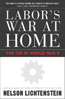

A new edition of a classic book on how World War II changed the face of labor in the US
A new edition of a classic book on how World War II changed the face of labor in the US


 A new edition of a classic book on how World War II changed the face of labor in the US
A new edition of a classic book on how World War II changed the face of labor in the US

|  |
Labor's War at HomeThe CIO in World War IIWith a New Introduction by the AuthorNelson Lichtensteinpaper EAN: 978-1-59213-197-6 (ISBN: 1-59213-197-2) |
"An impressive work which offers a useful perspective on the origins of the crisis the labor movement faces."
—The Nation
Labor's War at Home examines a critical period in American politics and labor history, beginning with the outbreak of war in Europe in 1939 through the wave of major industrial strikes that followed the war and accompanied the reconversion to a peacetime economy. Nelson Lichtenstein is concerned both with the internal organizations and social dynamics of the labor movement—especially the Congress of Industrial Organizations—and with the relationship between the CIO, as well as other bodies of organized labor, and the Roosevelt administration. He argues that tensions within the labor movement and within the ranks of American business profoundly affected government policy during the war and the nature of organized labor's political relations with Roosevelt and the Democratic Party. Moreover, the political arrangements worked out during the war established the foundations of social stability and labor politics that came to characterize the postwar world.
Excerpt available at www.temple.edu/tempress
"[Lichtenstein's] research remains a significant contribution... for drawing attention to the critical importance of events that transpired for labor during what Eric Goldman thirty years ago labeled 'the crucial decade.'"
—Reviews in American History
"Lichtenstein has compiled a splendid, well-researched book, written in an engaging and confident style. He effectively analyzes the search for labor stability during the war and, most important, what the implications were for trades unionism in the United States after 1945."
—The Economic History Review
"This book is essential reading for students of American labor."
—Contemporary Sociology
"Lichtenstein's... interpretation of the CIO's wartime experience is always provocative and frequently compelling."
—The American Historical Review
"[Lichtenstein's] book represents an important addition not only to labor history but to political history as well."
—The Journal of Economic History
"[Labor's War at Home] is grounded in a wide range of primary sources... Lichtenstein hopes to salvage from the war years a lesson for the militants of today."
—The Journal of American History
"[M]ore than an interpretation of the labor movement in the 1940's, it is a detailed analysis of the struggle and a reminder of what happens when a radical movement is absorbed into the state."
—Berkeley Journal of Employment and Labor Law
List of Abbreviations
Introduction to the New Edition
Preface
1. Introduction
2. The Unfinished Struggle
3. CIO Politics on the Eve of War
4. "Responsible Unionism"
5. Union Security and the Little Steel Formula
6. "Equality of Sacrifice"
7. The Social Ecology of Shop-Floor Conflict
8. Incentive Pay Politics
9. Holding the Line
10. The Bureaucratic Imperative
11. Reconversion Politics
12. Epilogue: Labor in Postwar America
Notes
Bibliographical Essay
Index
 | Nelson Lichtenstein is Professor of History at the University of California, Santa Barbara. He is the author of numerous books, including Walter Reuther: The Most Dangerous Man in Detroit and, most recently, State of the Union: A Century of American Labor. |
Labor Studies and Work
History
American Studies
Labor in Crisis, edited by Stanley Aronowitz.
The hope for a revived progressive movement in American politics and culture depends to a large extent on the possibility of a revived labor movement. This series will stimulate debate and discussion about the state of the American labor movement and its relation to the future of America by publishing short, provocative books that offer varying analyses and prescriptions for labor's revival as well as diverse assessments of its prospects. Books in the series will be relevant to a vision of the labor movement that presupposes movements and people who care about the chances of more equality, more democratic participation in the institutions of political and social life, and more power for those traditionally excluded from economic and political decision making.
© 2015 Temple University. All Rights Reserved. This page: http://www.temple.edu/tempress/titles/1693_reg.html.